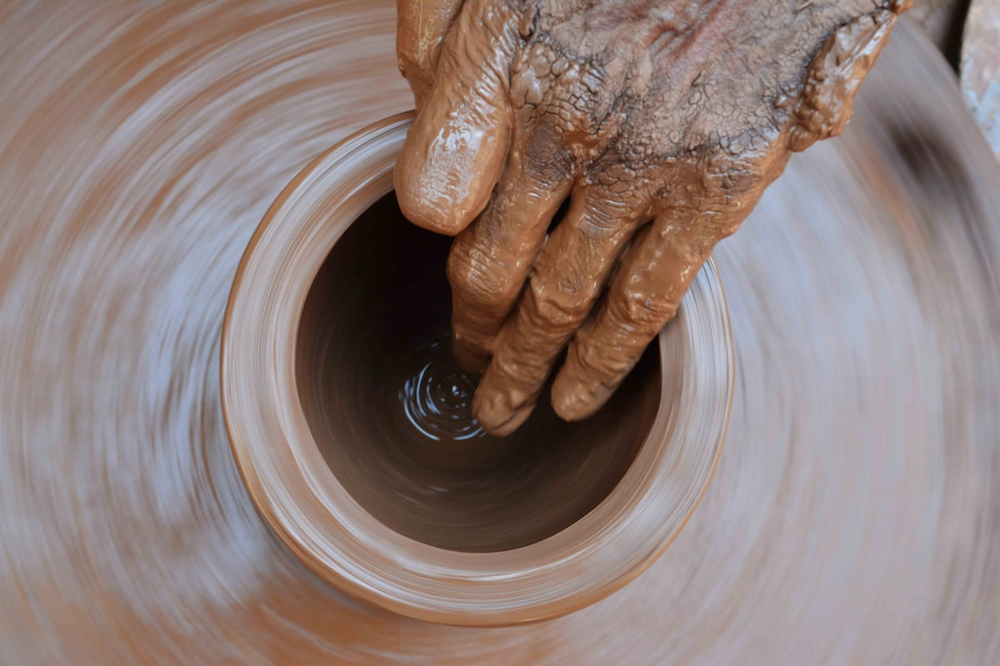

City + Dharavi Tour
The postcard city, then the square mile that works

Kumbharwada is the potters' quarter of Dharavi. The kilns there have been fired by the same families for generations, and rows of clay pots dry in the lanes before market day. A few streets away, sewing machines run in garment units, papads dry on rooftop racks, and workers in the recycling compounds sort plastic by colour and grade — a big share of Mumbai's plastic waste comes through here to start a second life. Add it all up and Dharavi's combined annual turnover is often estimated at as much as a billion US dollars. This walk is about that: work, trade and skill packed into less than a square mile.
It matters who leads it. Pooja was born and raised in Dharavi. The workshops on the route belong to people she knows; the lanes are the ones she grew up in. That is also why one rule is firm: no photographs of people. These are homes and workplaces, not exhibits, and everyone here gets the courtesy you would expect on your own street. You visit workshops, never anyone's home, and you come as a guest.
Before Dharavi, the morning covers the city's postcard side. You start at the Gateway of India by the harbour, drive the long curve of Marine Drive with the sea wall on one side and art deco flats on the other, and stop at the viewpoint above Dhobi Ghat, the open-air laundry where washing is beaten clean and hung to dry in rows of concrete pens. Pooja can usually arrange hotel pickup and a car with driver for the city stretch; confirm the details on WhatsApp when you book.
The day, stop by stop
- Gateway of IndiaStart on the harbour front before the day's crowds build.
- Marine DriveFollow the long sea curve past the art deco flats, with a stop on the promenade.
- Dhobi Ghat viewpointLook down over the open-air laundry, where washing is beaten clean in concrete pens and hung in long rows.
- Into DharaviThe drive north ends where the walk begins — Pooja's own neighbourhood, entered on foot as a guest.
- Recycling compoundsPlastic is sorted by colour and grade, shredded and washed — a big share of Mumbai's plastic waste starts its second life in these rooms.
- Leather workshopsWatch hides become bags, belts and jackets in small units whose goods sell far beyond the neighbourhood.
- KumbharwadaThe potters' quarter — working kilns, wheels turning, and rows of clay pots drying in the lanes.
- Garment and papad unitsSewing lines at full tilt, and papads drying on rooftop racks in the sun.
- Chai to finishSit down for a cutting chai and ask Pooja anything you've been saving up.
Included
- Pooja as your guide for the whole route
- Private tour — your party only, never a crowd with a flag
- Flexible start time
Not included
- Entry tickets, where a site charges them
- Meals and drinks
- Car and driver for the city stretch (can be arranged — ask when booking)
What to bring
- Closed, comfortable shoes — lanes are narrow and surfaces uneven
- Light, modest clothing, plus a cap or scarf against the sun
- A water bottle
- A little cash for chai or anything you buy from a workshop
Good to know
- No photography of people on the Dharavi walk — see the ground rules below
- You visit workshops and lanes, never anyone's home
- Mornings are cooler, and the running order can flex around your day
- Monsoon season (roughly June to September) can reshuffle the route
- Not suited to prams; some lanes are narrow with steps — ask about mobility needs
Fancy this one?
Message Pooja with your dates — she'll answer questions before you commit to anything.
Enquire on WhatsApp